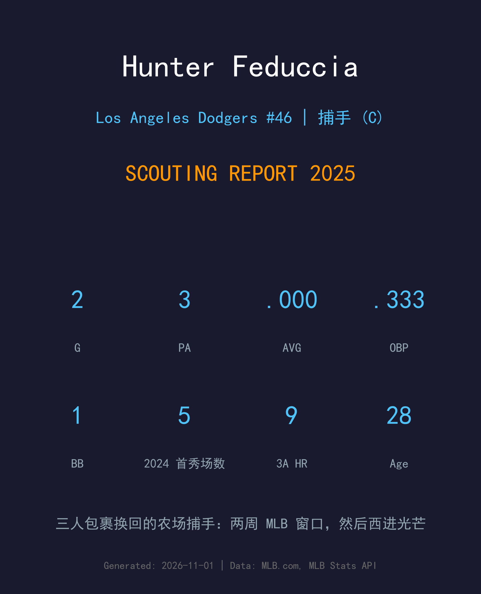
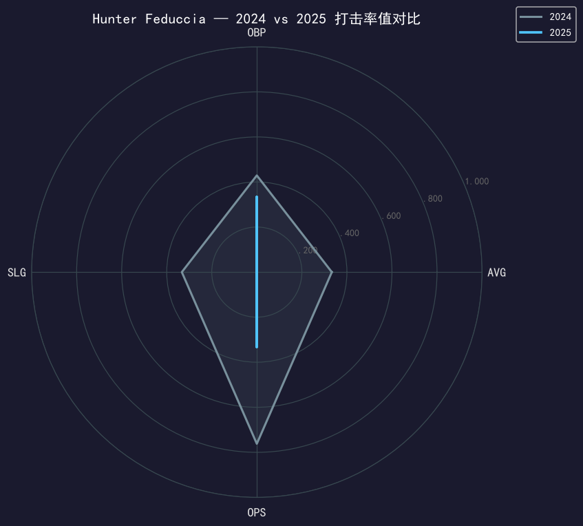
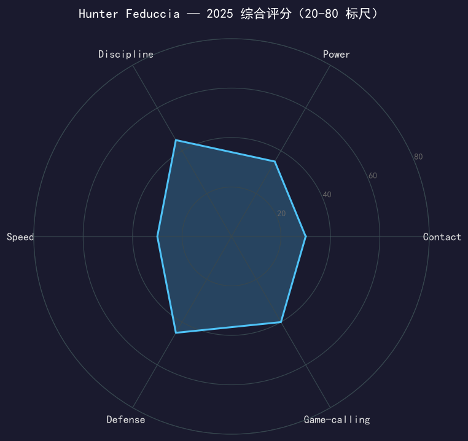

Los Angeles Dodgers #46 | 捕手 | 左打 | 三人包裹换回的农场老兵，两周的 MLB 窗口

⚠️ 小样本警告：本报告基于 2 场 / 3 个打席的道奇段数据。
Hunter Feduccia 是道奇 2025 年 7 月 31 日那笔三人包裹交易的「另一端」：坦帕湾光芒用 Paul Gervase + Adam Serwinowski + Ben Rortvedt 三换一，把他从奥克拉荷马城带到了圣彼德堡。在道奇的篇章里，他的 2025 年短得像一次春假：4 月 4 日作为第二捕手被召回，打了 2 场（3 PA、1 保送、1 三振、0 安打），4 月 10 日回到 3A——那是他身披道奇球衣的最后一场比赛。
但把他的 2025 年只写成「2 场 3 PA」会漏掉最重要的部分：在 OKC 的 79 场，他打出了 .290/.399/.467、9 轰 52 打点 的生涯最佳赛季——一名左打捕手能把上垒率刷到 .399，这正是光芒愿意用三名球员换他的原因。到了坦帕湾，他立刻成为主力轮值捕手：36 场出赛虽然只缴出 .151/.265/.209，但那是接满了冠军竞争者投手群的 36 场。
从 2025 年 11 月的视角看，28 岁的 Feduccia 站在了生涯最有趣的路口：他在道奇体系熬了七年（2018 年起）才换来 5 场大联盟出赛，而一次交易让他一夜之间从「第三捕手」变成「MLB 轮换」。他的故事不是道奇的损失，而是农场体系的残酷算术——天才太多，位置太少，而时间不等。
2024 年 7 月 31 日——整整一年前——他在道奇登上大联盟，5 场出赛 14 个打席缴出 .333/.429 的高上垒表现，给教练组留下「随时能上大联盟」的认证。
奥克拉荷马城 79 场，.290/.399/.467（OPS .866）——左打捕手的教科书数据。这份成绩单让他在交易市场上成了有价值的筹码。
7 月 31 日，道奇用他一人换回光芒的 Gervase + Serwinowski + Rortvedt——能被冠军队当成「一换三」的等价物，是对他 3A 表现最硬核的背书。

| 赛季 | 层级/队 | G | PA | AVG | OBP | SLG | OPS | HR | RBI | BB | SO |
|---|---|---|---|---|---|---|---|---|---|---|---|
| 2024 | LAD (MLB) | 5 | 14 | .333 | .429 | .333 | .762 | 0 | 1 | 2 | 2 |
| 2025 | LAD (MLB) | 2 | 3 | .000 | .333 | .000 | .333 | 0 | 0 | 1 | 1 |
| 2025 | OKC (3A) | 79 | 333 | .290 | .399 | .467 | .866 | 9 | 52 | 52 | 71 |
| 2025 | TB (MLB) | 36 | 102 | .151 | .265 | .209 | .474 | 0 | 8 | 14 | 28 |
两行 MLB 数据都小得可爱，但真正的故事在表格下面两行：OKC 的 .866 OPS 与坦帕湾的 .474 OPS 之间的落差，就是「3A 明星」与「大联盟 backup」之间的真实距离。值得留意的是他保送能力的稳定性——2024 MLB（14.3% BB 率）、2025 3A（15.6%）、2025 TB（13.7%）——在 102 个 PA 的光芒段里选到 14 次保送，这是大联盟投手也认可的老练眼光。他的问题从来不是「看不见球」，而是「看见了打不实」。
7 月 31 日的交易完美地标注了他的市场价值：道奇用他一个 3A 捕手，换回了 MLB 即战力（Gervase）、年轻左投彩票（Serwinowski）和经验 backup（Rortvedt）。这不是道奇「贱卖」，而是双方需求的镜像——道奇要现在，光芒要未来；Feduccia 就是那笔未来的本金。从 11 月回看，三换一里他这一端的分量在半年后依然成立：Gervase 在道奇季后赛名单留下足迹，而他在坦帕湾接满了 36 场——各取所需，两全其美。
Feduccia 的工具箱里最有价值的是「左打 + 捕手」的组合稀缺性。大联盟 30 队里，能稳定先发又打左的捕手常年不超过五个，这让每一个左打捕手都自带 platoon 溢价。他的 .399 3A OBP 说明他有能力把这份稀缺性兑现成上垒价值；而光芒段 .151 AVG 则说明，兑现的路上还差最后一步——把 3A 的 contact 质量搬到 MLB 投手面前。28 岁，不算晚。
他在道奇体系从 2018 年打到 2025 年，七年里只换来 5 场 MLB 出赛——不是因为他不够好，而是因为他前面站着 Will Smith 和 Barnes（以及被交易前的 Rortvedt）。道奇农场每年产出 MLB 级 talent 二十余人，而能登上大联盟的坑位只有二十六个。Feduccia 的七年是这套体系运转良好的证明，也是他个人必须接受的「时间税」。交易的本质是道奇替他承认：你的窗口在别处。

被三换一标价的左打捕手，窗口在坦帕湾打开
C+ 级 / MLB 轮换捕手竞争
道奇 2025 季后赛夺冠之路：外卡 2-0 红人 → NLDS 3-1 费城人 → NLCS 4-0 酿酒人 → 世界大赛 4-3 多伦多蓝鸟。
Feduccia 的 2025 季后赛是在坦帕湾的休息室里度过的——光芒在九月退出了外卡竞争，而他接满 36 场的膝盖需要冰敷。命运安排了一个颇具戏剧性的注脚：道奇在季后赛征途上击败的每一支国联球队，都是他曾经研究过的对手；而道奇夺冠那夜，他的新东家正在准备 2026 的重建计划。他既是道奇冠军版图的一块拼图（7/31 交易为道奇带来了季后赛名单成员），也是这笔交易的「离席者」——冠军戒指没有他的份，但香槟的每一滴里都有他的 3A 数据在发光。
Feduccia 的 2026 年掌握在坦帕湾手里：光芒重建期的 roster 正在清空老将，26 岁的捕手群需要一位「知道怎么赢球」的 backup——而他 36 场的 MLB 经验加上 .399 的 3A OBP，恰好是重建期最喜欢的那类低风险合约。理想剧本是成为光芒的 1B 捕手（每周 2-3 先发），用一年把 MLB AVG 拉回 .230；理想的话，2027 年他会以「被低估的左打捕手」身份进入自由市场，届时 30 岁，正值捕手黄金期。
理想剧本：光芒主力轮换捕手，.240/.340/.380 站稳 MLB
现实基准：备份捕手 + 3A 往返，等待 platoon 机会
下行风险：TB 段三振率（27.5%）若在 2026 延续，将跌回 depth 选项
Hunter Feduccia 来自路易斯安那州西南部的 Lake Charles，2018 年进入道奇农场体系，从亚利桑那联盟的烈日下开始了长达七年的爬升。这条路上没有太多头条：一年一个小联盟层级，打击率年年在 .270 上下，上垒率年年在 .380 上下——道奇农场的教练组给他起过一个只有内部流传的评价：「最不会让人紧张的捕手」。
2024 年 7 月 31 日，他在道奇登上大联盟，首秀赛季的 5 场 .333 像一张「随时可以回来」的存票。2025 年 4 月，他短暂兑现了这张票（2 场），然后回到 OKC 打出了生涯最好的 79 场——.399 的上垒率让全联盟的分析师都更新了表格。7 月 31 日，又一个 7 月 31 日，道奇把他送去了坦帕湾。
2025 年 11 月的 Hunter Feduccia 刚在坦帕湾打完职业生涯第一个「完整 MLB 月」。从 Lake Charles 到洛杉矶再到圣彼德堡，他的每一步都慢半拍，但每一步都踩在垒包上。七年道奇生涯教会他耐心，而耐心是他作为捕手最贵的装备——现在，轮到他在别人的重建里，做自己的主角。